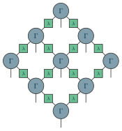

Examples / 22
Simple update

A PEPS in the form simple update keeps it: a tensor Gamma on every site and a diagonal matrix lambda on every bond.
The lambdas are the analogue of the Schmidt values of a chain, the center on a bond, and they are drawn as it is. They are not exact here – a lattice with loops has no canonical form – but they are what the update uses as one: to apply a gate to a bond, absorb the lambdas around its two tensors, apply, split by SVD, keep the new singular values as the bond's lambda, and divide the old ones out again. Cheap, local, and approximate in exactly that way.
The picture
Point at a line to see what it draws, or at the picture to see which line drew it.
\begin{tikzpicture} \tngrid[bonds=centerbond/$\lambda$]{S}{3}{3}{coef/$\Gamma$} \tnconnect{S} \tnopen{down}{S}\end{tikzpicture}
The whole file
\documentclass[border=4pt]{standalone}\usepackage{amsmath,amssymb}\usepackage{tikz-tensors}\input{notation}\begin{document}\begin{tikzpicture} \tngrid[bonds=centerbond/$\lambda$]{S}{3}{3}{coef/$\Gamma$} \tnconnect{S} \tnopen{down}{S}\end{tikzpicture}\end{document}